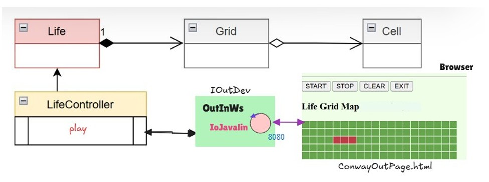

R1. Realizzare una versione in Java del gioco Life di Conway. Dotare il gioco Life di una pagina HTML come dispositivo di I/O R2. la pagina deve costituire un componente esterno alla applicazione secondo la architettura riportata in IoJavalin esterno alla applicazione R3. il gestore del gioco sarà l’utente che ha aperto per primo (owner) una pagina HTML collegata al gioco. . In altre parole, solo la pagina dell’owner avrà pulsanti di comando START/STOP/CLEAN/EXIT attivi R4. la pagina HTML deve essere aggiornata in modo automatico man mano il gioco procede R5. un utente non owner che si collega mentre il gioco è in corso, dovrebbe vedere lo stato attuale della griglia in modo corretto R6. opzionalmente: la pagina HTML deve indicare se il gioco continua anche nel caso di griglia vuota o di config urazione tabile R7. il deployment del gioco deve avvenire mediante Docker.
Cosa intende il committente con la parola Cella? domain/ICell.java Cosa intende il committente con la parola Griglia? domain/IGrid.java
